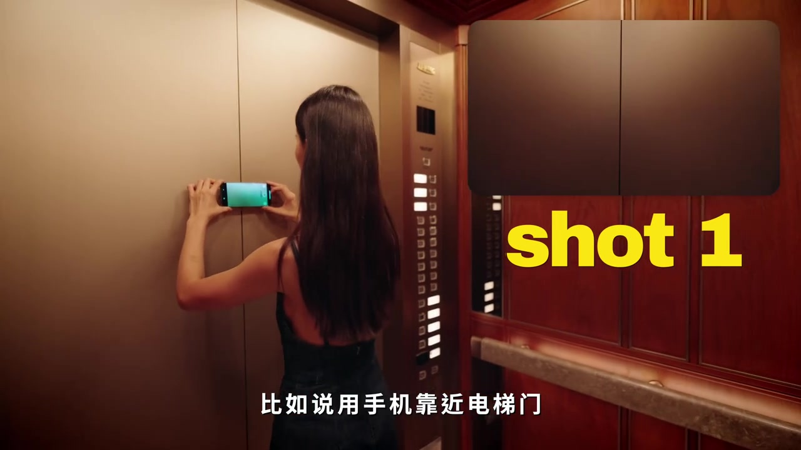
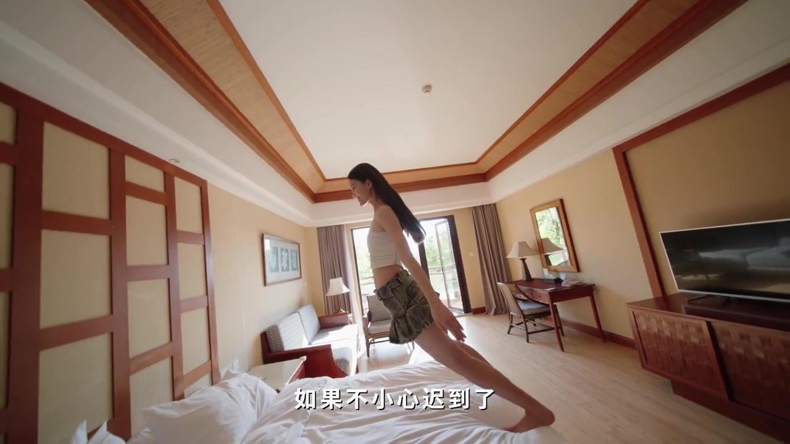
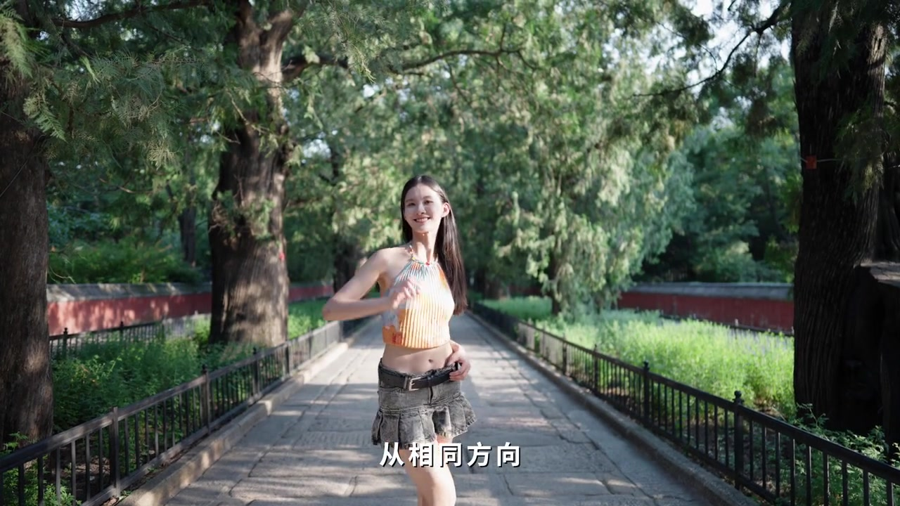

第一种 · 00:00
出门先拍一个「走路转场」
视频几乎没有寒暄，直接宣布第一种：出门旅行无论如何都要先拍一个走路转场。作者把它定性为「动作匹配转场」——旅行里最无脑、也最稳的处理方法。
画面字幕写作「走路转场 / 动作匹配转场」；Whisper 多处把「转场」听成「专场」。下文叙述按字幕与语境理解，页末转录保留原始分段。

精髓被说得很短：在想拍的任何场景里做一个相同动作，再把它们串联起来。剪辑时还要仔细把左右脚的动作连接好，剪出来才会觉得丝滑。


第二种 · 00:19
「霸道总裁爱上我」之转身回头
第二种被她戏称为学术名字：「霸道总裁爱上我之转身回头」。操作同样短：人物往前走时，拍下转过来那一下，再把不同画面拼起来。

在此基础上还能叠一层视觉逻辑：第一个镜头拍人物走过来擦肩而过；第二个镜头再拍往前走、转身回头，把两段剪在一起——像是和初恋擦肩而过，带一点宿命感。

进阶 · 00:42
相似动作之上，再加视觉逻辑
作者说最简单的相似动作转场已经搞定，接下来要更有创意。例子一：躺平转场——如果不小心迟到，可以一秒钟从酒店床上直接转场到下一个目的地。

她还强调细节：仔细看会发现，它和下一个镜头的运动方向完全一致——画面甚至打出「镜头运动方向」箭头提示。
例子二：只要转个身，就可以从室内直接转场到室外，因为两段人物动作和构图完全一致。只要动作连续，大脑来不及反应，就会觉得流畅。

收束 · 01:08
像电影蒙太奇一样「骗」大脑
结尾把方法抬到原则层：这有点像电影里的蒙太奇——即使前后镜头完全不同，只要画面带有相似情绪、相似运镜或动作，就可以欺骗大脑，从而做出丝滑转场。
Whisper 将「运镜 / 欺骗 / 丝滑」分别听成「运进 / 偏偏 / 伺华」。页末转录保持原样；叙述按画面字幕与旅拍语境校正理解。
这一分钟到底教了什么
不是枚举十个孤立特效，而是把「相似动作」拆成可拍可剪的几层：走路匹配保底、转身回头加情绪、躺平与室内外转身加运动方向一致性，最后用蒙太奇原则解释为什么观众会买账。